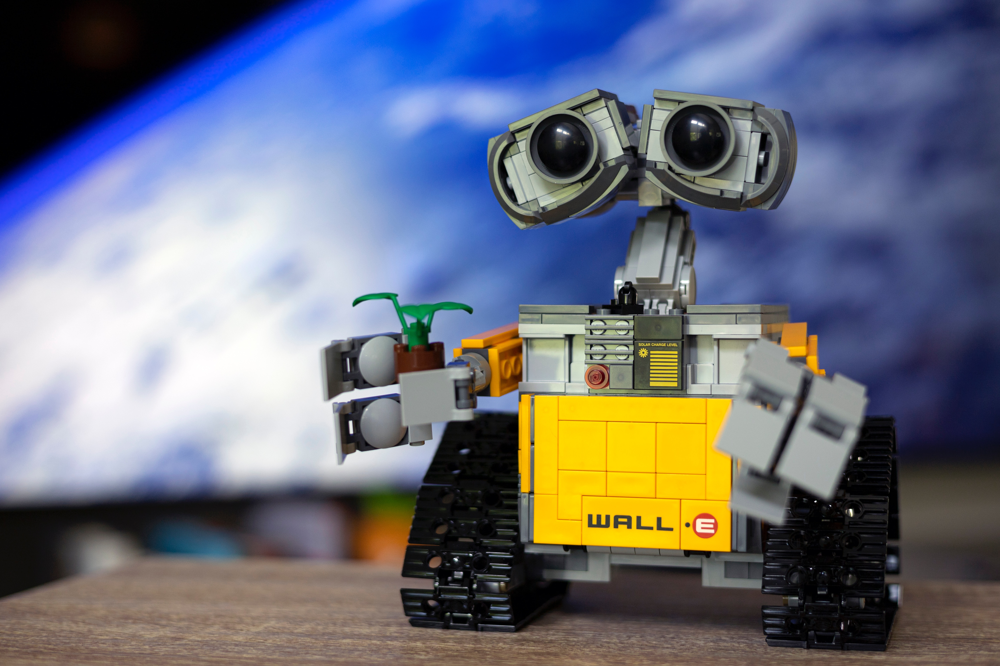

Placing people at the center of climate action: Driving collective intelligence
Collaborators: Cambridge Zero and Cambridge Psychology, Harvard University, Caltech and Twitter (2021-22)
Funder: Quadrature Climate Foundation (QCF, 2022-Present) and Keynes Fund (2022-23)
Key publications: Nature Human Behaviour,
PLOS Climate,
Global Environmental Change Part A: Human & Policy Dimensions

Desirable machine intelligence and data justice for climate action: A scoping project
Collaborators: Cambridge CST, TU Berlin, MCC-Berlin and Boston University
Funder: Google Cloud (2022) and QCF (2022-present)
Key publication: npj Climate Action
Measuring heatwave impacts on Sustainable Development Goals
Collaborators: Cambridge Zero, University of Michigan and Yale School of Environment
Funder: QCF (2022-present)
Key publication: PLOS Climate
Impact: Blanket press coverage in 130+ news agencies, including major Indian and international agencies like Bloomberg,
Associated Press, and Reuters, the BBC,
and influential magazines such as Wired and TIME Magazine. Invited to present at an G20 Summit event in India.
Solar geoengineering, conspiracy spillovers and ethical dimensions
Collaborators: Centre for Climate Repair, Cambridge Zero, Google Jigsaw, Twitter ((2021-22) and Caltech
Funder: Centre for Climate Repair (2021-22), Google Cloud (2022), Keynes Fund (2022-23) and QCF (2022-present)
Key publication: iScience, Cell Press,
Global Environmental Change Part A: Human & Policy Dimensions<
Impact: Press coverage in TIME Magazine, Independent UK, Cambridge Independent
Climate accountability and misinformation in the fossil fuel industry
Collaborators: Cambridge Judge Business School, Caltech and Twitter (2021-22)
Funder: Cambridge Judge Business School Small Grants (2021) and QCF (2022-present)

Computing for distributive energy justice in slum rehabilitation housing
Collaborators: CJBS, Bennett Institute for Public Policy and Cambridge Architecture
Funder: Keynes Fund (2022-23)
Nuclear energy perception in the UK amidst the war in Ukraine
Collaborators: Energy Policy Research Group, CJBS
Funder: Energy Interdisciplinary Research Centre and Isaac Newton Trust (2022-23)
Perception of carbon emissions inequality in high and lower-middle income countries
Collaborators: Copenhagen Business School
Funder: QCF (2022-present)